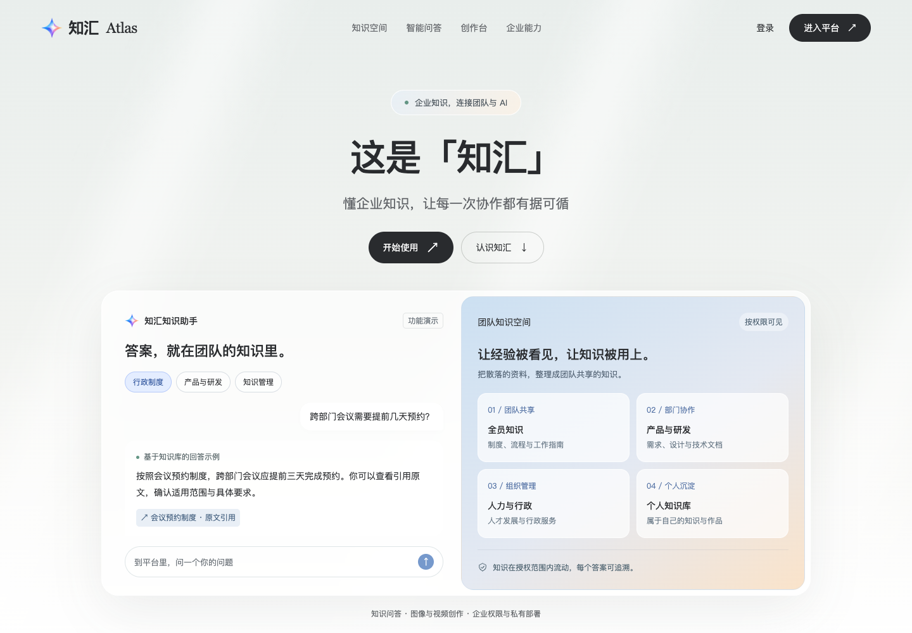

ATLAS / HOMEPAGE DESIGN
一个知汇，三个首页方向。
参考 Today AI 的轻量导航、柔和背景与产品叙事，为知汇制作的完整首页初稿。点击任一方向查看长页与交互。
三版均使用现有知汇 Logo 与产品资料，包含知识空间、问答、创作、企业能力和常见问题。此页用于比较设计方向。
参考 Today AI 的轻量导航、柔和背景与产品叙事，为知汇制作的完整首页初稿。点击任一方向查看长页与交互。
三版均使用现有知汇 Logo 与产品资料，包含知识空间、问答、创作、企业能力和常见问题。此页用于比较设计方向。